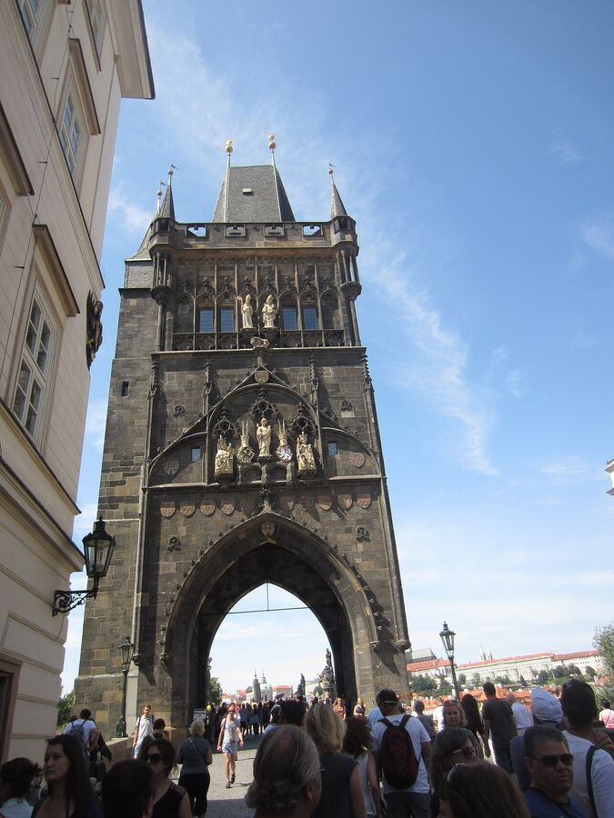

approx. distance
riding time*
terrain
Your cycling companion from Prague to Dresden.
Beautiful places, unhurried stops, and the open path ahead.

The adventure starts in PragueLife is betterToday’s stops Stage overview · schematic, not a navigation track
Map unavailable. Use the location links on the attraction cards.
Distances are planning estimates. Stops, ferries and detours add time. Some sections share roads; follow your operator’s confirmed cycling track.